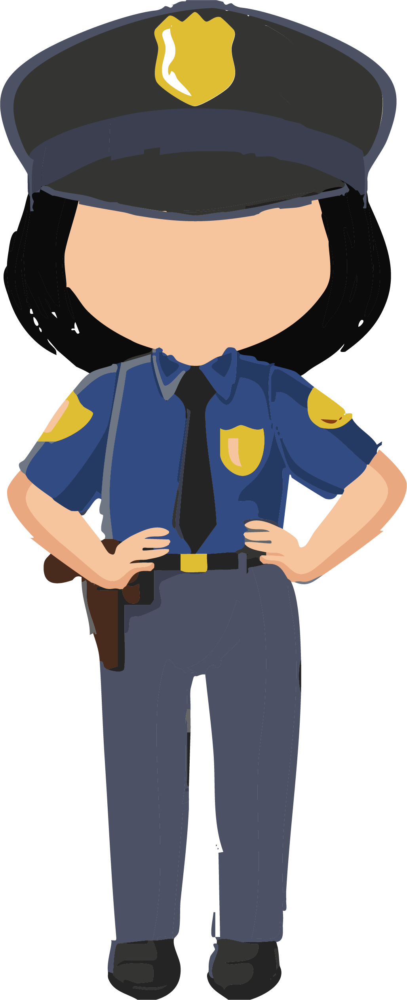

My Ambition
Let's me share a little story about my secret 🤫
I hava a few ambition that I want to be when I'm adult.

When I was a child, I wanted to become a police officer. I thought police looked very smart in their uniforms. They could catch bad people, use guns, and drive fast and nice cars. Also, my father was a police officer, and he was my idol at that time.
As I grew older, I studied in the computer science stream. Then, I had a new dream — to become a smart IT person, like a programmer. I started learning about coding and found it very interesting. Until now, I still enjoy learning about IT.
Before I finished secondary school, I found another job that looked simple but meaningful, a librarian. My mother is a school librarian, and she became my role model. That is why I chose to study library science at this university.